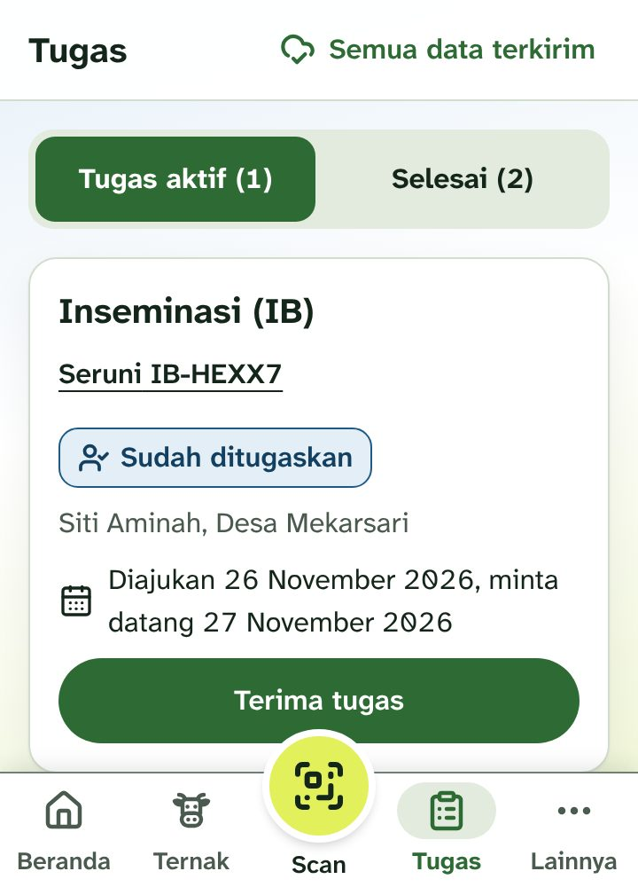
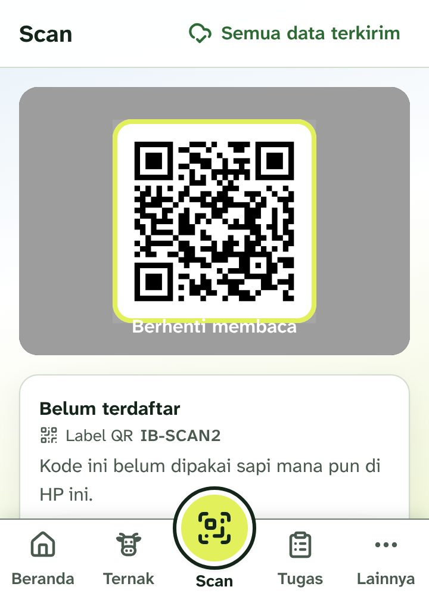
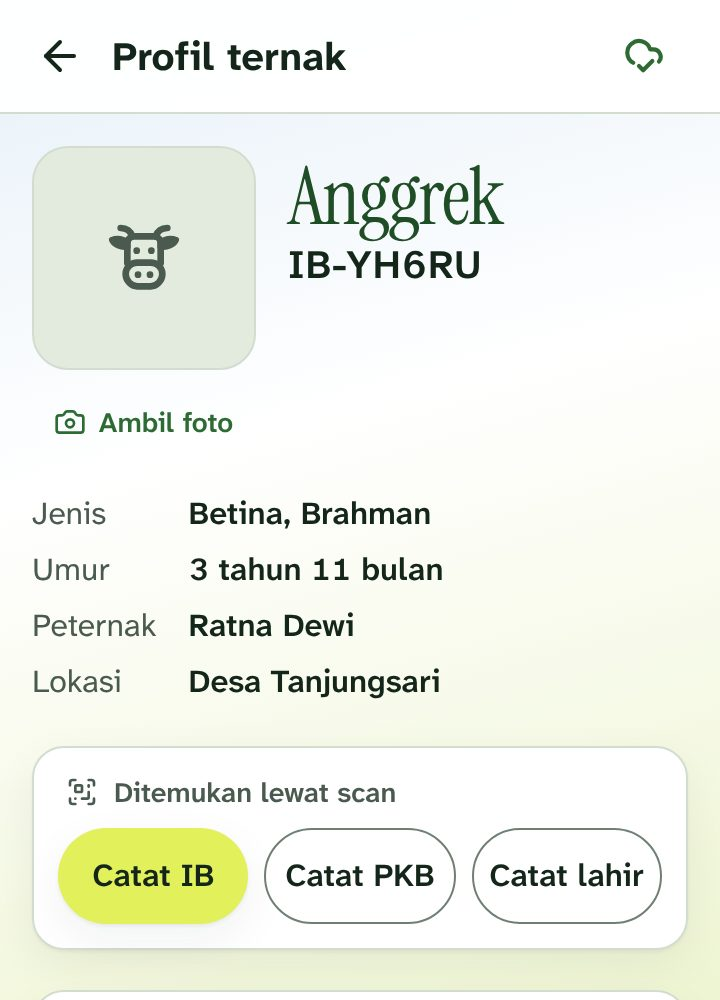
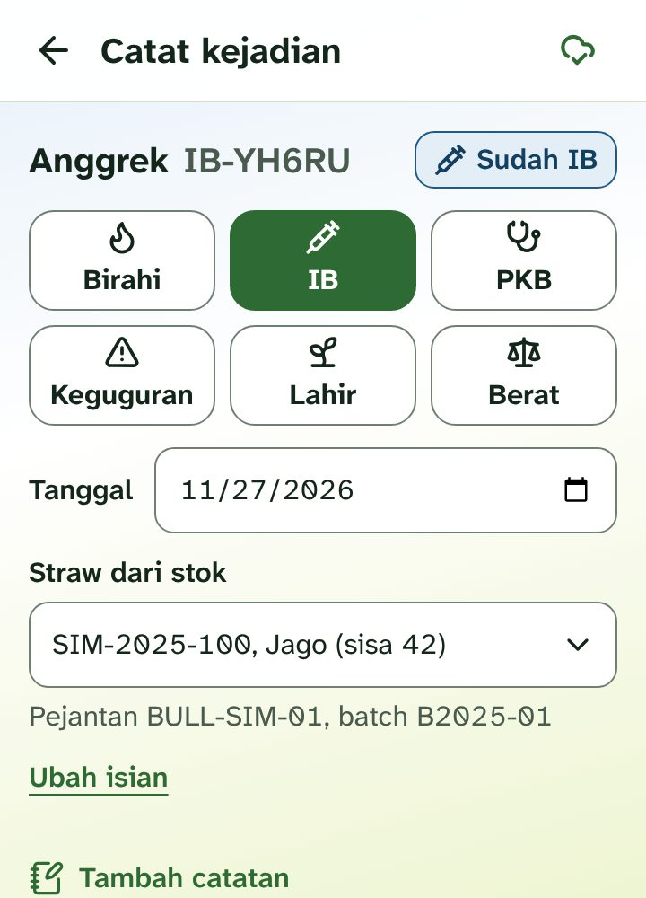
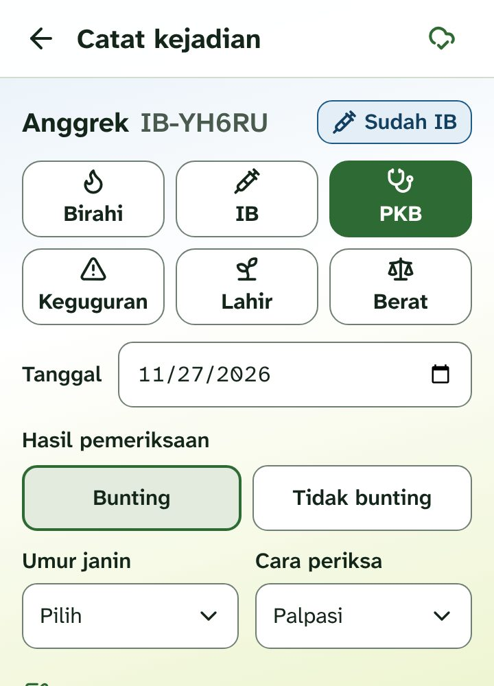
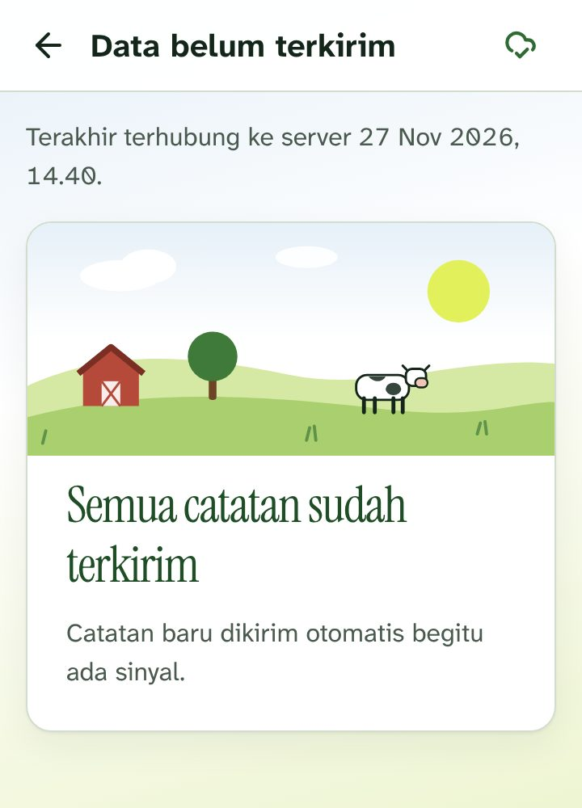

IB Ternak untuk Inseminator
Terima tugas, scan label sapi, catat IB, PKB, dan kelahiran di kandang.
-

Lihat tugas
Menu Tugas berisi permintaan yang ditugaskan admin. Tekan Terima tugas, lalu berangkat.
-

Scan label sapi
Menu Scan, arahkan kamera ke label QR. Tanpa label: ketik kode atau nomor eartag.
-

Pilih tindakan
Profil sapi terbuka dengan tombol cepat Catat IB, Catat PKB, dan Catat lahir.
-

Catat IB
Straw terisi dari stok dan IB terakhir Anda. Periksa tanggal dan jam, lalu Simpan IB. Dari tugas, permintaan peternak ikut ditandai selesai.
-

Catat PKB
Pilih Bunting atau Tidak bunting, isi umur janin (bulan). Aplikasi menghitung perkiraan lahir.
-

Pastikan terkirim
Tekan ikon awan di kanan atas. Catatan bertanda Perlu dicek bertentangan dengan riwayat sapi: perbaiki tanggal atau buang.